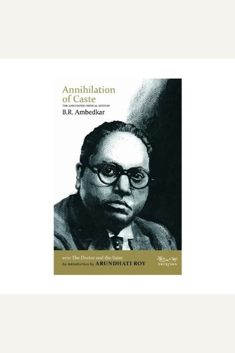

Library › Power & Strategy
Annihilation of Caste — Summary & Key Lessons

The speech that shook India — Ambedkar's surgical critique of caste and the case for equality.
📖 OPEN THE FULL INTERACTIVE BREAKDOWN →🌐 Read it in Hindi, Hinglish, Gujarati, Tamil & 22 more languages — free, with audio.
💡 The Big Idea
Ambedkar argued that caste is a 'graded inequality' — a machine that ranks humans and freezes opportunity — and that no amount of reform within it can fix it. Real change requires annihilating the system itself: intermarriage, equal rights, education for all, and political power for the excluded. Sentiment without structure changes nothing.
🧠 The 6 Key Lessons
Lesson 1: Name the System Before You Fight It
Chapter 1: The Anatomy of Caste
Ambedkar's first move was intellectual: he defined caste precisely — not as a spiritual hierarchy but as a graded system where each layer oppresses the one below it. You cannot dismantle what you cannot describe. Precision about the problem is the first half of the solution.
📖 Example: He showed that caste is 'graded inequality' — unlike class, where the poor can rise, caste fixes people by birth and makes even the lowest groups defend the ladder that crushes them. Naming this mechanism turned a vague grievance into a solvable problem. Read the full example →
⚡ Do this: Write down the exact mechanism of the inequality you face — who gains, who loses, what rule preserves it — before planning any response.
Lesson 2: Reform Within the System Is Not Reform
Chapter 2: Against Half-Measures
Ambedkar rejected both Gandhi's 'change of heart' approach and cosmetic reforms, arguing that systems reproduce themselves unless their foundations change. Patches that preserve the core are worse than no change, because they drain urgency while keeping the machine intact.
📖 Example: When reformers proposed temple entry and symbolic gestures, Ambedkar called them 'futile' — the Dalit was still barred from wells, schools and power. He insisted on structural demands: education, political representation, inter-caste marriage and legal… Read the full example →
⚡ Do this: Ask whether your current 'fix' changes the rules or only the scenery. If it preserves the power structure, escalate your demand.
Lesson 3: Social Efficiency Is a Moral Argument
Chapter 3: The Costs of Caste
Beyond justice, Ambedkar argued caste is inefficient: it wastes talent, blocks mobility and fragments society into hostile groups. Inequality is not only wrong — it is stupid. Framing social justice as collective efficiency wins allies who are unmoved by moral appeals alone.
📖 Example: He pointed out that a system which assigns professions by birth cannot optimize for talent — the brilliant child of a 'low' caste is wasted as a laborer while a mediocre 'high'-caste child inherits leadership. Nations that waste talent lose the race, a… Read the full example →
⚡ Do this: Audit your team or circle for talent waste: who is stuck in a role below their ability because of their background? Fix one instance.
Lesson 4: Political Power Is the Currency of Change
Chapter 4: The Path
Ambedkar insisted that the excluded must win political power — seats, votes, offices — because no privileged group voluntarily surrenders advantage. Charity and sympathy are donations; rights are what you enforce. The lesson transfers everywhere: if you want structural change, win a seat at the table where rules are made.
📖 Example: He fought for separate electorates and reserved seats in the 1930s, and later wrote the constitutional safeguards for Scheduled Castes into independent India's founding document. Whatever one thinks of reservations, they converted sympathy into enforceable… Read the full example →
⚡ Do this: Stop waiting to be 'given' a seat. Identify one decision-making body relevant to you and engineer your way into it.
Lesson 5: Know Your History or Repeat It
Chapter 5: The Burdens of Memory
Ambedkar's scholarship — from untouchability's origins to the Mahad Satyagraha's water rights — was a weapon: he armed his people with their own erased history. Oppressed groups are kept weak partly by forgetting. Documenting your struggle is a strategic act, not nostalgia.
📖 Example: At the Mahad tank in 1927, Ambedkar led thousands to assert their right to public water — and later burned the Manusmriti publicly as a symbol of the laws that enslaved them. Both acts were about memory: reclaiming what the system wanted erased. Read the full example →
⚡ Do this: Document your community's or team's origin story and struggles in writing — memory is leverage the powerful always try to control.
Lesson 6: Courage Is Contagious — Lead Anyway
Chapter 6: The Personal Cost
Ambedkar faced threats, insults and isolation throughout his life, yet delivered the Annihilation of Caste speech even when the organizers withdrew the invitation. His lesson: the people who change systems are those willing to be uncomfortable, unpopular and alone for a while. Courage is not the absence of fear; it is the refusal to be governed by it.
📖 Example: When the Jat-Pat Todak Mandal cancelled his speech after seeing the draft, Ambedkar self-published it and dedicated it 'to the millions of the depressed classes' — turning censorship into the book's greatest advertisement and history's judgment in his favor. Read the full example →
⚡ Do this: Identify the sentence you are afraid to say in your sphere. Say it — carefully, factually, in writing — this month.
✅ 5-Step Action Plan
- Precisely define one inequality you face: its rule, its winners, its losers
- Check whether your current fix changes rules or only scenery
- Frame one justice issue in terms of collective efficiency, not just morality
- Engineer yourself into one decision-making body relevant to your cause
- Write and publish one piece documenting an erased history or overlooked struggle
⚠️ When This Doesn't Work
⚠️ When this doesn't work: Ambedkar's confrontational framing was necessary in 1936 but can backfire in modern settings — pure confrontation without coalition-building alienates potential allies, and structural demands without a staged roadmap can leave people worse off. Pair the fire with a plan, and pick battles you can sustain.
💀 The Graveyard Proves It
🔥 Daksha's Yagna — The Sacrifice That Ended in Destruction Because the Host Snubbed a Guest. Burn: The yagna destroyed, Daksha decapitated — a ceremony of blessing became a funeral. Read the full case study →
💬 Best Quotes from Annihilation of Caste
- “Caste is not just a division of labour — it is a division of labourers.”
- “I measure the progress of a community by the degree of progress which women have achieved.”
- “Justice has always evoked ideas of equality, of proportion, of compensation.”
Interactive version: mark lessons as read, listen in your language, share quote cards.